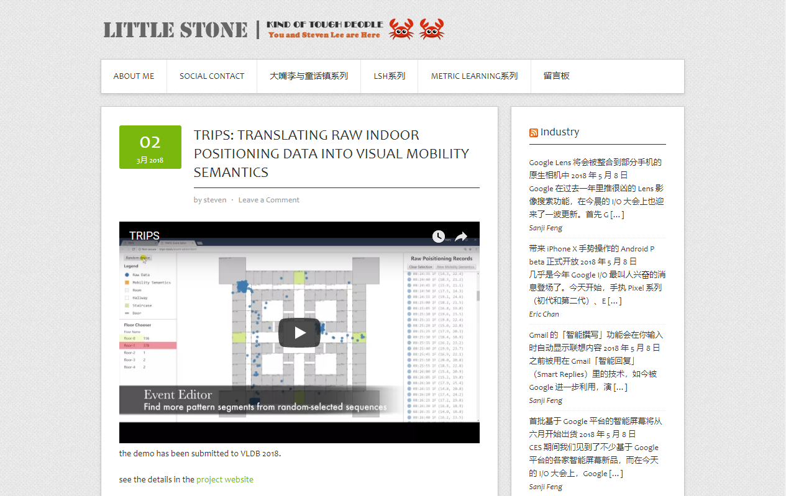

2018年，可谓经历了许多，等到了一些工作成果的接收、完成了博士论文的撰写，也即将踏上一段未知的旅途。所以，这一年我称之为The Milestone。
从年初陷落到最低谷，到现今在继续逐力向前，我决定，今年咱们要喊个口号 - #2018实现改变#。
实现改变，也要从这个BLOG开始。因而下定决心，开始抛弃笨重的WordPress改用更为便利和轻量的静态网页框架Hexo，这就是这个新站点的由来。
正式地，这也意味着从 2018年5月8日 起，本站所有发表的内容都是重新撰写的，除此之外则迁移自我的老站点 - 我将持续进行修订。
再看一眼老站点的截图吧
Anyway，改变就要实现了。